A Callflow is where you will configure what happens when one of your phone numbers receives an inbound call or SMS. You can have a callflow for a single number, or a callflow designed for many services.
In this article we will cover:
- Callflow Statuses
- Glossary of Callflow Terminology
- Widget Overview
- Using callflows with Phone Numbers
Direct vs Business Callflows
Callflows come in two major types, Direct and Business. You can switch between these types with the tabs on the callflows page:
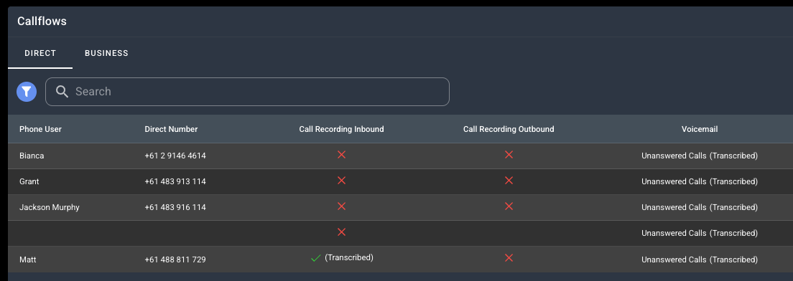
In this screenshot we can see that the current shown Callflows are Direct.
Direct callflows are fairly straightforward and offer a direct service of number > phone user.
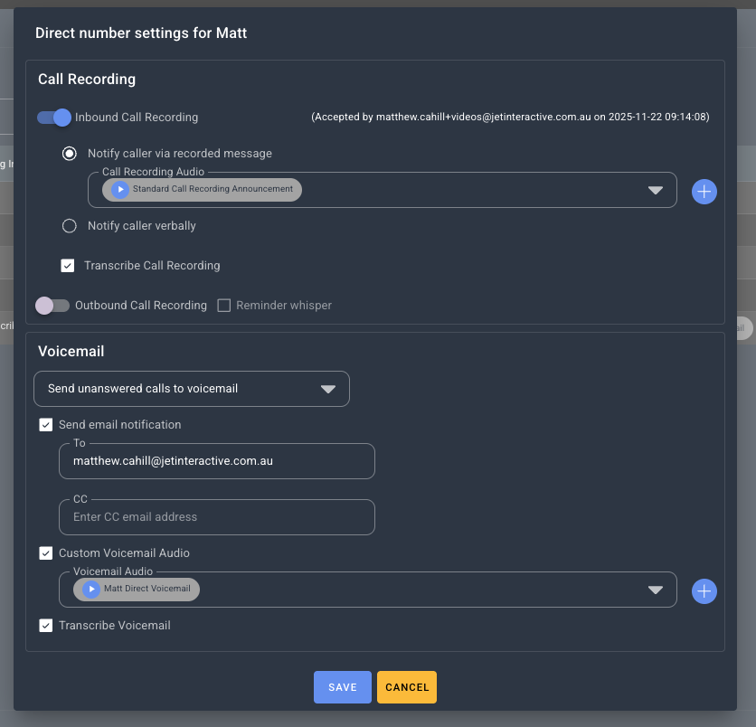
Direct Callflows can be edited it with a few features such as voicemails, call recording, transcribing and email notifications. All of this can be edited by clicking the edit icon to the right hand side of the call flow listing.
Business Callflows are notably more feature rich but take some more time and care to properly setup. The rest of this article covers them
Callflow Statuses
Every callflow will have a status. ACTIVE, AVAILABLE or DRAFT.
| Callflow is currently in use by one or more of your numbers. | |
| Callflow is complete but has not been used by any services yet. | |
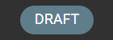 |
Callflow is incomplete and not able to be used yet. Complete the callflow to 100% to change the status to AVAILABLE for use. |
Glossary
We will be using a few terms throughout this article. Here's what they mean:
| Term | Description |
| Canvas | This is the space in your callflow builder where you will place your widgets and design your callflow. |
| Widget |
A widget is a component of your callflow builder that allows you to add an event or feature to your services. Widgets can do things like:
For a full list of widgets and functions see Callflow 101 |
| Node |
A node is what we call the coloured dots on the top or bottom of each widget. Connecting these nodes to each other is how you build your callflow. Nodes will often have different colours based on their functionality. For example on the Dial widget below:
|
| Modal Window | When you click a widget, the setting or configuration screen of this widget will pop up on the right of your screen. We sometimes refer to this as your modal window. You can change the size, shape and location of your modal window by dragging the blue title base anywhere on your screen, and using the small white lines on the bottom right to increase the size. |
| Progress Bar |
In the top right of your callflow builder, you will see a progress bar showing a percentage. This percentage needs to be at 100% to allow this callflow to be used. At any time, you can click into this progress bar to see what is left to complete. 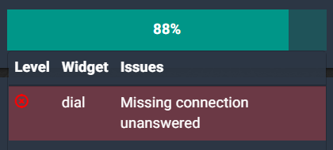 Clicking the message displayed will highlight the widget that still needs attention: 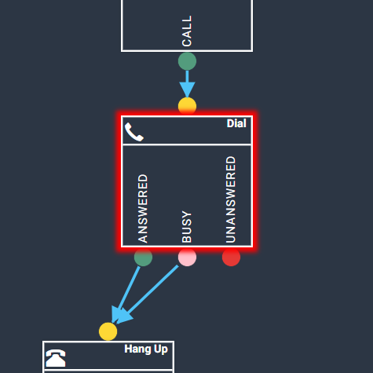 |

Widget Overview
Dial

The Dial widget is used to configure a dial event. This enables the user to configure what phone user or external number a call should dial, and also where the call should go if the nominated user is busy, or if the call is not answered within its configured timeout. Calls that go to an answering point that is busy or calls that timeout can be configured to go to Voicemail (below).
More information on how to use Dial widgets:
How to add or change an answering point
Greetings
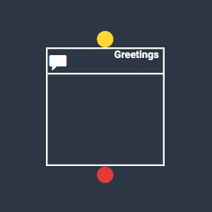
The Greetings widget is used to configure an audio message to be played to a caller before proceeding through the callflow. A greeting widget is usually found early in a callflow and is usually followed by an action event such as a IVR menu, Queue or Dial widget. A greeting allows the user to ensure the caller they have called the right number and makes the call feel more personal.
More information on how to use Greetings widgets:
Hang Up
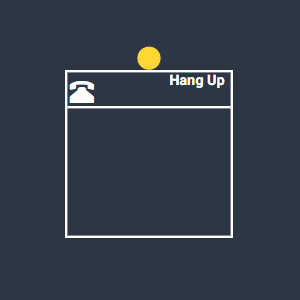
The Hang Up widget is used to end a callflow. All callflows must end in a Hang Up to be 100% completed and ready for use. The hang up widget does not require any configuration other than being connected to the callflow by the yellow node above the widget.
IVR Menu
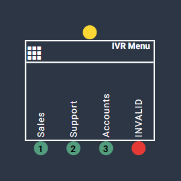
The IVR Menu widget is used to set up an Interactive Voice Response Menu. An IVR menu is the system that helps callers navigate their way to the correct path by listening to a menu and then entering the corresponding prompt on the dial pad to direct their call where they would like to go. IVR menus are great for businesses with one inbound number and multiple departments or locations. It is one of Jet’s most used features.
More information on how to use IVR Menu widgets:
Voice Mail
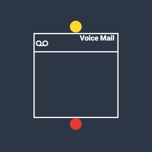
The Voice Mail widget is used to configure an audio voicemail message to be played if the call goes unanswered. You can also configure an email address to be notified once a voicemail has been left. An automated email with a link to the voice message audio will be sent to the nominated email addresses. The email will also contain the caller ID, Time/Date, the phone user called and the reason it went to voicemail.
More information on how to use Voicemail widgets:
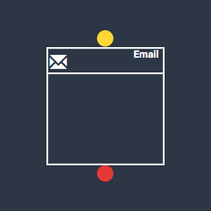
The email widget is used to notify the user of a phone call via an automated email sent to an address of the user's choosing. In the case of a Cloud Mobile user, the email widget can be used to notify the user of SMS messages.
Within the email widget, you can configure the email address(es) to be notified, as well as the subject and email text. Information such as caller ID, time/date, SMS message and call recording details will automatically be filled into the email.
Time Routing
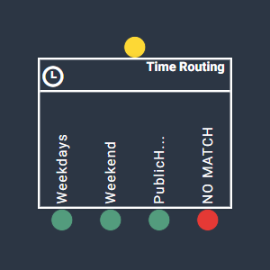
The Time Routing widget is used to set up time of day routing. Time of day routing allows the user to direct calls differently during different periods of day, or on specific dates and one-off events. In the widget, the user chooses the time zone and sets up business hours. The more time slots you configure the more nodes will be created for you to direct calls under the widget. Time of day routing is great for directing after hours calls and calls on public holidays straight to an after hours voicemail.
More information on how to use Time Routing widgets:
How to add time of day routing
SMS
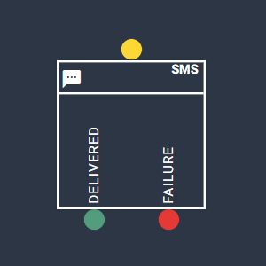
The SMS widget is only used with Cloud Mobile phone users. This enables the user to receive SMS to the Jet phone user of their choosing. The SMS widget will need to have a phone user selected as a recipient. Two nodes will be displayed under the SMS widget -
- Delivered - A delivered SMS is complete can be directed to a Hang Up widget.
- Failure - In the event a SMS fails to be sent an Email widget can be added and configured to send an email containing the SMS caller ID, time and message text to a nominated email address.
More information on SMS can be found here:
Queues
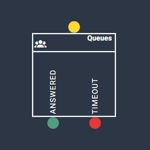
The Queues widget enables users to have new callers placed into a queue if your phone users are already on a call. The queue will hold the caller until it is able to be answered or has timed out, depending on the parameters of the queue, and is sent to voicemail or redirected elsewhere. Queues must have Jet phone users to be in use.
Queue options include -
- Timeout (Seconds) - How long the call will be kept on hold before being redirected.
- Phone Users - How many users are involved in the queue and in which order to dial the phone users.
- Escape prompts - Caller inputs that can be used to return to the previous menu if an IVR is used or to go straight to voicemail, etc.
Note - A queue must first be set up in the Phone System >> Queues menu before adding it to the Queues widget in a callflow.
For more information on how to use Queues:
Understanding your Queue setup
Geo Routing
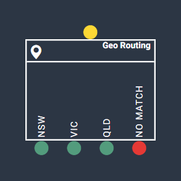
The Geo Routing widget is used in complex callflows, and it is recommended you book a consultation with Jet Support if you wish to set this up. Geo Routing allows users to automatically direct calls coming from specific geographical locations to a nominated answering point. Eg. You are using a 1300 number nationwide and you would like calls coming from Sydney to be directed to your local Sydney offices. This setup is great for nationwide businesses and franchises.
More information on Geo Routing:
Post Code
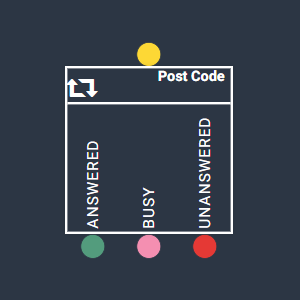
The Post Code widget is used in complex callflows, and it is recommended you book a consultation with Jet Support if you wish to set this up. Postcode routing allows the user to play an audio prompt asking the caller to enter their postcode to be directed to the closest phone user. Postcode ranges can be set up within the widget to direct calls to nominated answering points if the caller inputs a postcode within that range.
Using callflows with Phone Numbers
To view your phone numbers, choose the Phone Numbers from the Phone System section.
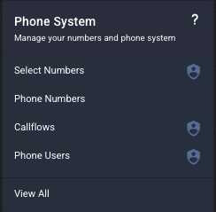
This will display a list of your phone numbers.
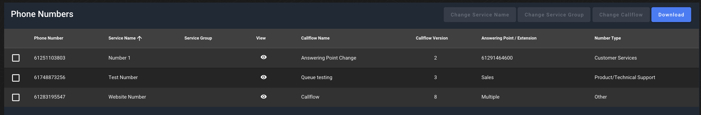
From the phone numbers screen, you can change the Service Name, Service Group, download a list of your services or change the callflow of each number as required.
To change the callflow associated with a phone number, click on the phone number you wish to change and click Change Callflow. You will be able to choose any Available or Active callflow.
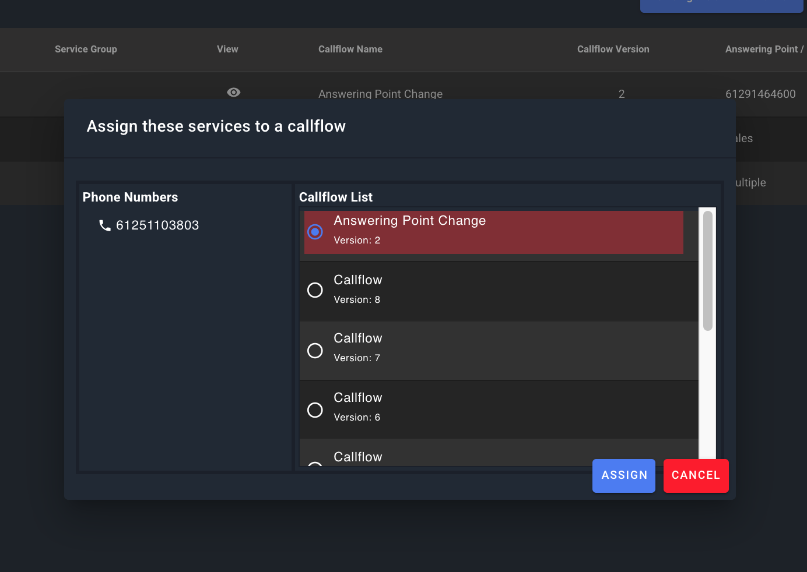
Copy Callflow
To Copy a callflow head to callflow section and click on copy .
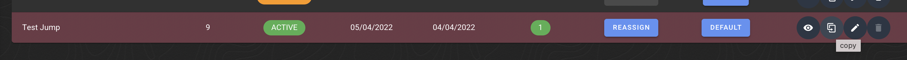
Then on the top create click on Create callflow---> Copy from clipboard.
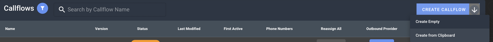
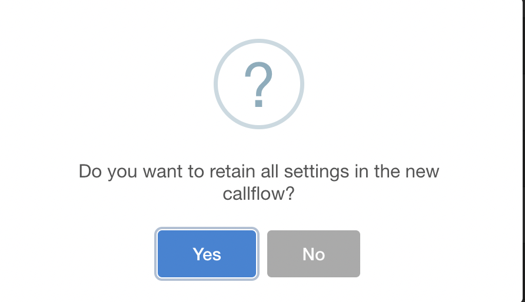
JUMP Widget
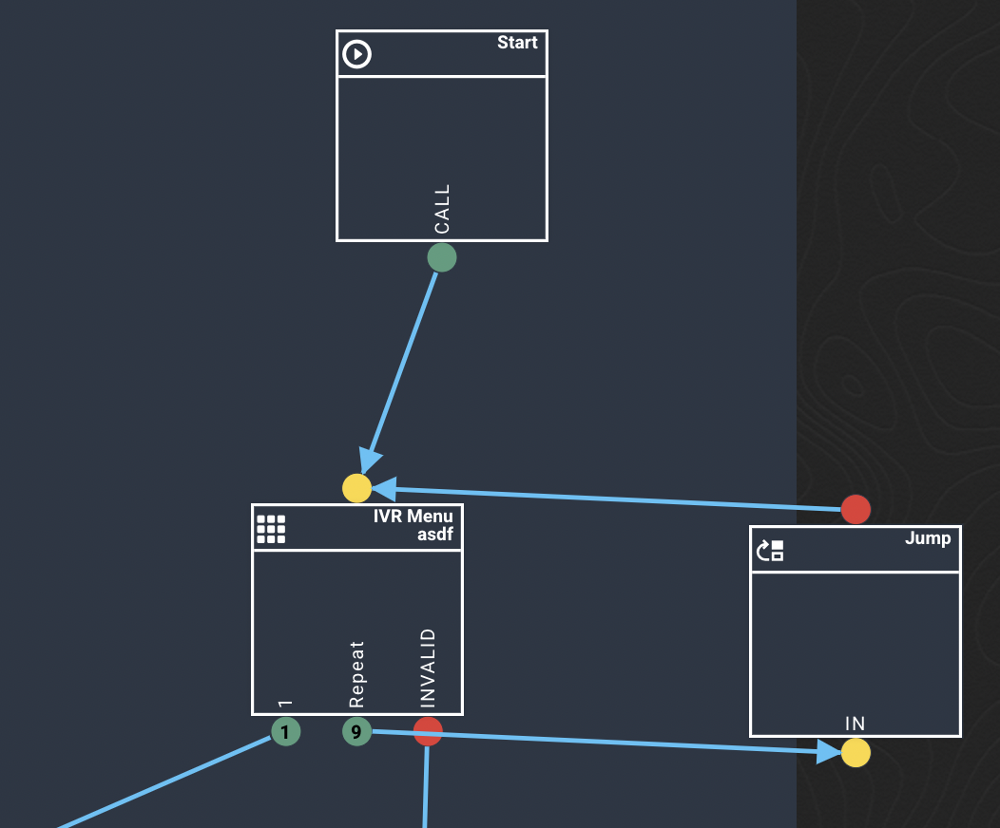